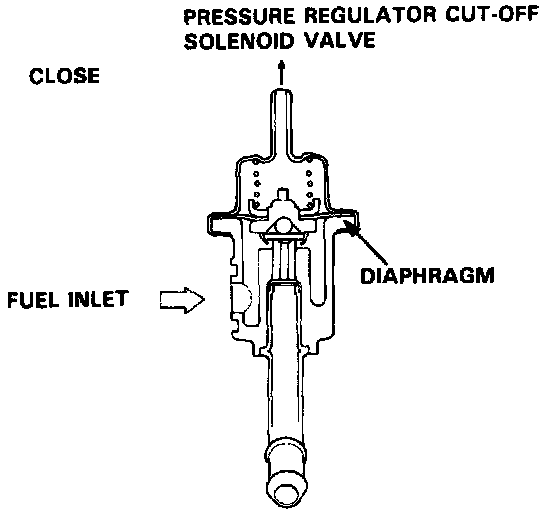
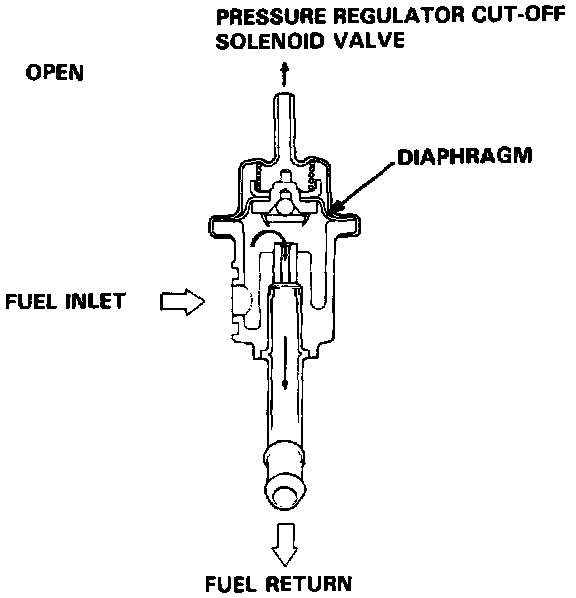

Fuel Pressure Regulator: Description and Operation


Description
The fuel pressure regulator maintains a constant fuel pressure to the injectors. When the difference between the fuel pressure and manifold pressure exceeds 2.55 kg/cm2 (36 psi), the diaphragm is pushed upward, and the excess fuel is fed back into the fuel tank through the return line.
Operation
When the coolant temperature exceeds 105°C (221°F) or the intake air temperature exceeds 80°C (176°F), the pressure regulator cut-off solenoid valve (PRCSV) cuts vacuum to the pressure regulator, to insure high fuel pressure to the injectors and prevent vapor lock.